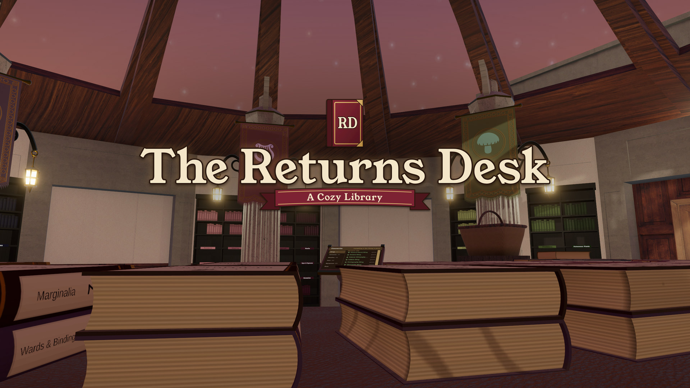

Lamplit
The Returns Desk: A Cozy Library
A cozy VR game. Out November 2, 2026 on Steam (PC VR) and Meta Quest.
Wishlist on Steam Wishlist on Meta Quest

You are the librarian of a Victorian rotunda library, and you put the books back. Read each book's cover, find its wing and shelve it. Finished rows reopen the building wing by wing: the lanterns, the weather and the light come back. No timers, no fail state.
Press kit
- Developer and publisher
- Lamplit, a solo studio based in Azerbaijan
- Release date
- November 2, 2026
- Platforms
- Steam (Windows PC VR) and Meta Quest
- Price
- $12.99 USD
- Genre
- Cozy VR sorting game. Single player, no timers, no fail state
- Controls
- Tracked motion controllers, seated or standing
- Languages
- English text, no voice acting
- Stores
- Steam · Meta Quest
- Press contact
- lamplit.games@proton.me
Short description
Put 864 books back where they belong in a Victorian rotunda library, by hand, in VR. Every cover tells you its wing, its row and its slot, and nothing sorts itself. Finished rows open new wings and bring back the weather and the hours of the day. No timers, no fail state.
Trailer
Download the trailer (MP4, 1080p, 1:45)
Screenshots


Click a screenshot for the full 2560×1440 image.
Downloads
- Logo, PNG with a transparent background
- Key art, JPG, 2560 px wide
- Screenshots: 1 · 2 · 3, JPG, 2560×1440
- Trailer, MP4, 1080p


Everything here may be used in coverage of the game.
About Lamplit
Lamplit is a solo studio based in Azerbaijan. The Returns Desk is its first game.